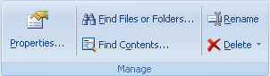

Use the Home tab to add new Projects and Folders, manage them, start/stop downloads and view downloaded sites.

New Project - Creates a Project and displays a new Project Properties dialog.
Project Wizard - Creates a new Project and asks for its settings in a few easy steps.
Project from Template - Shows a list of templates and a Web Templates link to browse a list of a user-published Project templates.
New Template - Creates a new local Template and shows its Properties dialog to setup it.
New Folder - Creates a new folder in the Projects tree. Folders are good to divide projects by categories.

Start - Begins downloading the selected Project or all Projects in the selected Folder
Stop - Stops downloading the selected Project
Suspend - Suspends or resumes currently performing downloads. Suspend will first wait until all currently downloading files are finished and then will not load other files until resumed. See the Download section for more details.
Site Map - Starts downloading the selected Project. However downloaded files are not saved to the disk. They are used only to make the structure Map of the site.

Browse - click to browse downloaded files of the selected Project in the Internal Browser. If the Project contains multiple starting URLs, you may click the lower part of the Browse button to choose among them.
Edit - Opens the selected file in Internal editor.
Browse With - Contains list of external browsers to browse downloaded Projects or certain files from the Project Map.
View In & Edit In - Contains list of external tools to view or edit downloaded files from the Project Map. You can setup the list of tools in the Options dialog | Tools section.
Favorites - Displays the Favorites submenu to create a new Project using Microsoft Internet Explorer Favorites, Netscape, Mozilla bookmarks and Opera Hot lists.
Import Project Settings - Shows submenu with Paste (allows to Paste a Project or Folder from the clipboard to the Projects tree), Load from Text file and Restore (from a backup copy).
Torrent File - Opens a .torrent file from your disk to create a new Project to download using BitTorrent protocol.
Export Files - Copies all downloaded files for the selected Folder or Project to a specified directory. Files with special information (descr.wd3, *.primary) are not copied. It can also add standard extensions to the copied files or rename them using 8+3 or Joilet file names format. Other features include creation of HTML Help, ZIP, EXE, MHT files and FTP upload.
Export Project Settings - Shows submenu with Copy (Copies the selected Folder or Project settings to the Clipboard. You may paste the Project to an E-mail to send to a another person.), Save to Text file, Publish Project (Add your Project to the collection of user templates on MetaProducts.com site) and Backup (make a backup copy of the Project settings along with all downloaded files).

Properties - Displays the Properties dialog box for the selected Project.
Find Files or Folders - Searches for a Project or Folder by caption, URL or description in the Projects tree or for a file, directory or server name in the Map.
Find Contents - Searches for keywords in downloaded Web sites.
Rename - Allows to edit the name of the selected Project or Folder.
Delete - Deletes the selected Project or Folder in the Projects tree or file or directory in the Map. "Only Project Files" removes all files that were downloaded for the selected Project. The Project itself remains intact.